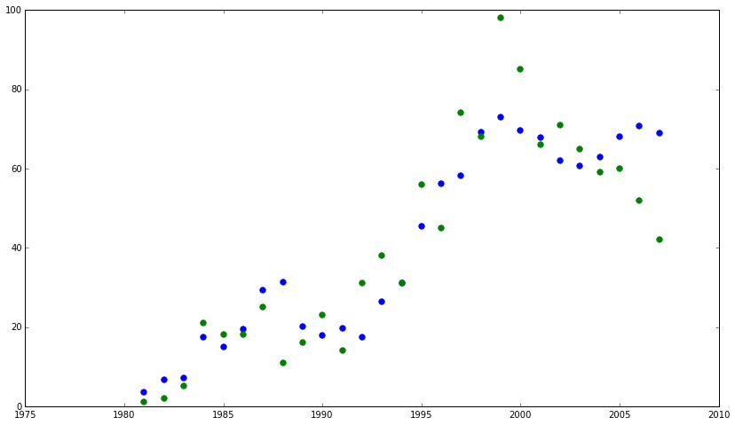
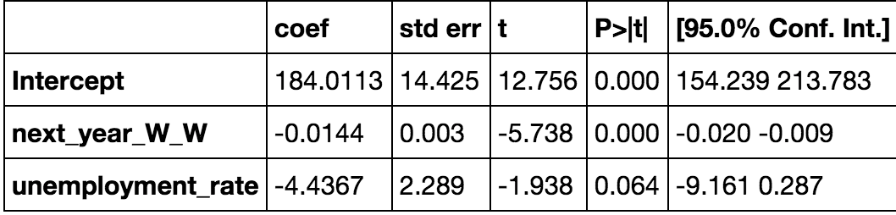
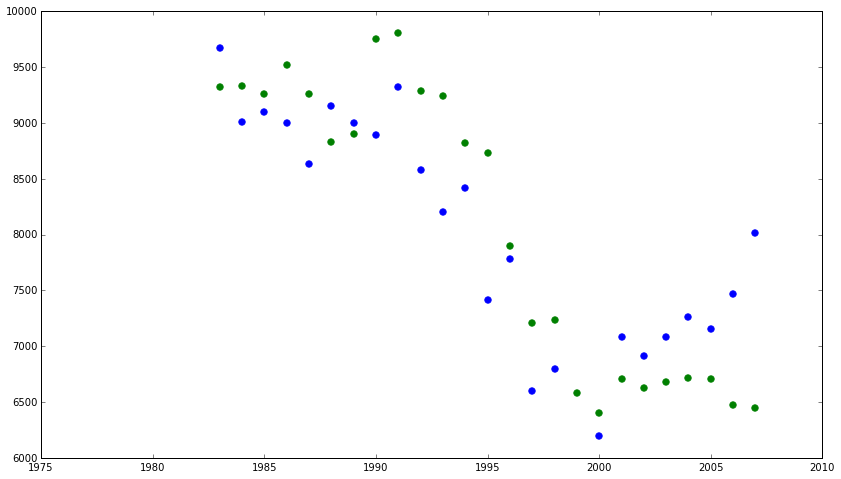
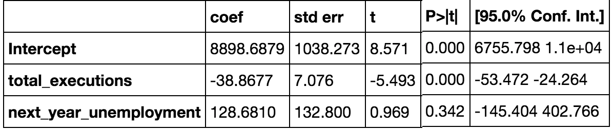

First, I would like to say to the family that I am sorry, and I do ask for forgiveness. There will be also a funeral mass at St. Thomas and I would like to invite all of those from the State and the family to be there if they would like to come. My last words will be: And He was the light that shineth in the hearts of all man from the foundations of the world. If we confess our sins He is just and true to forgive us of our sins and cleanse us from all unrighteousness. Peace and goodness. *classified neg
I want to talk to my friends over here for a second. Well, it's good to see you guys. Look after Mary Lynn for me. Like I said, I've called my mother already, so she knows. Goodbye. *classified neg
First of all, I want to apologize to the family of Kelly Elizabeth Donovan. I am sorry for what I did to her twelve years ago. I wish they could forgive me for what I did. I am sorry. I am sorry for hurting my family, for hurting my friends. Jesus forgive me. Take me home with you. I am ready. I love you all.
Names and the times more likely to be the name of executed person-- Larry: 2.01781944045, Willie: 3.00842281428, Johnny:3.85939086642, Bobby:2.67507149687, Billy:2.16211560786, Earl:3.36550554113, Jose:2.45503391114, Ricky:2.83909266782, Derrick:5.14952226758
Also scraped nicknames from http://www.censusdiggins.com/nicknames.htm and compared frequency of inmates having nicknames to overall frequency of nicknames in the population, but the difference (23% in executed v. 21% in population) were not significantly different.
total_homicides ~ total_executions + unemployment_rate -- r^2 0.48
total_executions ~ total_homicides + unemployment_rate -- r^2 0.698
total_executions ~ T_White_Victims + unemployment_rate -- r^2 0.753
total_executions ~ White_White + unemployment_rate -- r^2 0.766
White_White ~ total_executions + unemployment_rate -- r^2 0.757
total_executions ~ next_year_W_W + unemployment_rate -- r^2 0.815
 next_year_W_W ~ total_executions + next_year_unemployment -- r^2 0.797
 